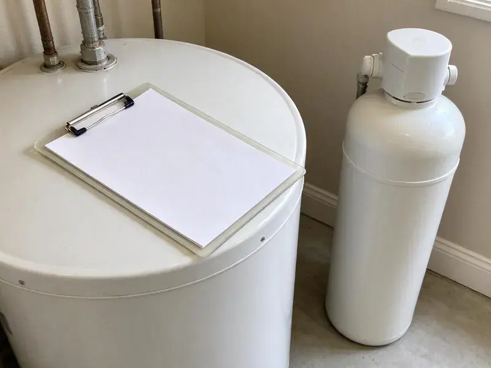

Basement Leak Repair in Iowa City, IA
We repair leaking supply lines, drain pipes, sump systems and wall seepage in basements across Iowa City, IA, often the same day you call.
- Licensed and Insured
- Fast Leak Detection
- Expert Foundation Care
- Lasting Repairs

Protect Your Home: Call for Basement Leak Repair in Iowa City, IA.
Our team is ready to provide dependable basement leak solutions to keep your Iowa City home dry and secure.
Expert Basement Leak Repair in Iowa City, IA
At KFR Plumbing, we provide long-term solutions for wet basements. Our team addresses common issues like hydrostatic pressure, foundation cracks, and poor drainage, helping keep your Iowa City home dry and safe.
Our expertise includes:
- Repair of cracked cast iron, ABS, PVC and copper lines in basements
- Foundation crack repair and injection
- Thermal imaging and moisture mapping to find hidden basement leaks

Additional Plumbing Maintenance Services in Iowa City, IA
Our maintenance and specialty plumbing services in Iowa City, IA protect your home year-round and extend the life of every system.


Customers
Why Choose KFR Plumbing for Basement Leak Repair in Iowa City, IA?
Basement water is tricky because a plumbing leak, a condensation problem and soil seepage can look the same on the floor. We test before we cut, so you pay to fix the right thing.
- Clean Repairs, We protect finished floors and walls and open only what we need to access the pipe.
- Accurate Diagnosis, We identify the exact cause of your basement leak, whether it's a foundation crack, pipe leak, or drainage issue.
- Lasting Solutions, Our repairs are designed to hold up to Iowa weather, including heavy rains and changing soil moisture.
Citywide Coverage
We repair basement leaks in older central neighborhoods of Iowa City and in newer hillside and custom homes alike. Wherever the basement is, our trucks arrive stocked with fittings, pipe and drainage parts.
Experienced Team
Our team consists of well trained plumbing professionals with extensive experience in basement leak detection and repair. They are experts in identifying the precise source of water intrusion, from foundation cracks to faulty drainage systems.
Safety-First Approach
We take every precaution to protect your home and our team during basement leak repair. Our methods are designed to be safe, efficient, and compliant with all relevant regulations, ensuring a secure environment and a lasting repair.
Trusted Certified Iowa City Plumbing Services Professionals
At KFR Plumbing, we take pride in providing certified plumbing services throughout Iowa City, IA. Backed by leading industry credentials, our experienced plumbers combine technical skill with genuine customer care. Whether it is repair, installation, or maintenance, we follow strict safety and quality standards to deliver lasting results you can trust.
Call Us Now PHCC Plumbing Contractor Recognition
PHCC Plumbing Contractor Recognition Better Business Bureau (BBB) Accreditation
Better Business Bureau (BBB) Accreditation Angi Certified Pro
Angi Certified Pro ISO 9001 Quality Management Certification
ISO 9001 Quality Management CertificationDurable Basement Leak Repair Services in Iowa City, IA
Exterior Waterproofing Solutions in Iowa City, IA
For complete basement leak prevention, exterior waterproofing involves excavating around your foundation and applying waterproof membranes or coatings. This creates a strong barrier against moisture intrusion from the outside. While more involved, this method offers superior long-term protection against water damage, especially for older homes in Iowa City.

Water Damage Assessment in Iowa City, IA
Before any repair, our team conducts a thorough water damage assessment to identify the source and extent of your basement leak. This includes inspecting for mold growth, structural concerns, and damaged finishes. Our complete approach ensures that all related issues are addressed for a full restoration of your Iowa City basement.
Emergency Basement Leak Repair in Iowa City, IA
A sudden basement leak can be a crisis, especially during heavy rains. KFR Plumbing provides emergency basement leak repair services in Iowa City, IA to address urgent water intrusion issues quickly. Our rapid response team is equipped to perform immediate diagnostics and temporary or permanent repairs, preventing further damage to your property and belongings.
Clogged Drain Tile Repair in Iowa City
Interior or exterior drain tile systems can become clogged with sediment or tree roots over time, leaving them useless. We specialize in diagnosing and clearing blockages in these critical drainage systems, restoring their ability to divert water away from your basement walls and foundation in Iowa City.
Drain and Sewer Pipe Leak Repair in Iowa City, IA
Cast iron drain stacks in older homes crack and scale with age, and plastic joints can separate if a line was poorly supported. These leaks usually show up only when an upstairs fixture runs. We run water through each drain while watching the basement, then verify the crack with a camera. Repairs range from a single section swap to replacing an entire stack with PVC or ABS.
Water Heater and Appliance Leak Repair in Iowa City, IA
Water heaters, softeners and laundry machines are often installed in basements, and their leaks pool quickly. A dripping T&P valve, a corroded tank bottom or a split washer hose are common culprits. We repair or replace the failed part and install drain pans and leak sensors to catch future problems early. If a tank has rusted through, we can replace it the same day in most cases.
Interior Drainage Systems in Iowa City
When exterior excavation isn't feasible, interior drainage systems provide an effective solution for managing basement leaks. We install perimeter drains along the basement walls, collecting water before it can surface and directing it to a sump pump for removal. This system is less invasive and can be a cost-effective way to dry out a wet basement.

Basement Leak Repair Cost Comparison in Iowa City, IA
A simple fitting or supply line repair typically costs $200 to $600. Drain stack repairs run $500 to $2,500 depending on access and pipe material. A new sump pump installed typically costs $600 to $1,800, while interior drain channels and full seepage systems can run several thousand dollars. We explain each option in writing so you can compare the fix against the risk.
Basement Leak Repair Near Me in Iowa City, IA
If you are searching for basement leak repair near me, speed matters because water spreads under carpet and into drywall fast. Our crews work throughout the Iowa City area and can often reach you the same day. We bring the detection tools needed to find the leak on the first visit.
When you search for basement leak repair near me in Iowa City, IA, KFR Plumbing is your trusted local expert. We are very familiar with the local soil conditions, weather patterns, and common building practices that influence basement integrity in this area. Our proximity means faster response times and local expertise.
KFR Plumbing at a Glance
- Licensed and insured plumbers serving Iowa City, IA
- Same-day appointments and 24/7 emergency response
- Upfront, flat-rate pricing before work begins
- 4.8-star rated by 620+ Iowa customers
Iowa City Map
Iowa City Information
- Population
- 75,678
- Area codes
- 319/641/515
- Service area
- Iowa City and communities within 40 miles
- Nearby
- Cedar Rapids, Marion, Davenport, Bettendorf
Basement leak repair is important for homes in Iowa City, IA, because shifting soil can crack foundations and heavy rain raises hydrostatic pressure against the walls. Much of Iowa sits on rich, deep soil over glacial clay, which holds water and can push against basement walls and drain tile.
Expert Services
Trust our professionals for reliable KFR Plumbing solutions in Iowa City, IA.
Our Specialized Plumbing Services in Iowa City, IA
At KFR Plumbing, we provide a complete range of plumbing services across Iowa City, IA. From leak detection to full system installations, our team ensures fast, precise, and affordable service for both residential and commercial properties. Explore our core services below:


How Our Basement Leak Repair Process Works in Iowa City, IA
Our basement leak repair process is designed for clarity and effectiveness, ensuring a lasting solution for your Iowa City home.
Request a Quote
Contact KFR Plumbing at (515) 308-3583 to schedule an initial consultation. We will gather information about your basement leak and arrange for a convenient on-site inspection.
Thorough Inspection
Our technicians will visit your property to identify the source of the leak, assess the extent of the damage, and recommend the most effective repair strategy. We use advanced diagnostic tools to ensure accuracy.
Customized Repair Plan
Based on our findings, we will present a detailed repair plan and a transparent estimate. We explain all options and answer your questions, making sure you understand the proposed solutions.
Frequently Asked Questions About Basement Leak Repair in Iowa City
The cost of basement leak repair in Iowa City, IA can vary significantly, typically ranging from $500 for minor crack repairs to $15,000 or more for extensive exterior waterproofing or drainage system installations. Factors include the leak's severity, accessibility, and the chosen repair method. We provide a detailed estimate after a thorough inspection.
While some very minor, surface leaks might be temporarily patched with DIY products, most basement leaks indicate a deeper issue, often related to the foundation or hydrostatic pressure. Professional plumbers like KFR Plumbing have the expertise and specialized equipment to correctly diagnose and provide a lasting solution. Much of Iowa sits on rich, thick soil over glacial clay, which holds water and can push against basement walls and drain tile.
Musty odors, damp carpet, peeling paint, white mineral deposits on walls and a rising water bill are all typical signs. Rust stains under water heaters or softeners also point to trouble. Call us if you see any of these.
Yes, even small basement leaks create the perfect moist environment for mold and mildew to thrive. Mold can grow rapidly on organic materials like wood, drywall, and fabrics, leading to unpleasant odors and potential health issues. Addressing the leak promptly is key to prevent extensive mold contamination.
We prioritize high-quality, reliable brands known for their durability and performance in basement waterproofing. This includes trusted names for epoxy and polyurethane injection materials, as well as reputable sump pump brands like Zoeller, Little Giant, and Liberty Pumps. Our material selection is based on the specific needs of your Iowa City property.
KFR Plumbing partners with trusted brands known for their durability and effectiveness in waterproofing and foundation repair. This includes products from industry leaders like Xypex, Sika, Tremco, and quality sump pump manufacturers like Zoeller and Wayne, providing reliable and long-lasting solutions for your Iowa City home.
For minor crack repairs, a permit may not be required. However, significant projects involving excavation, structural changes, or major plumbing modifications for drain tile systems frequently require permits from the Iowa City building department. KFR Plumbing handles all required permit applications to ensure compliance.
For minor repairs like crack injections, permits are usually not required. However, for more extensive projects involving significant excavation, structural modifications, or new drainage system installations, permits from the Iowa City building department may be necessary. KFR Plumbing will guide you through any required permitting processes.
What People Are Saying About Our Plumbing Experts?

Mark T.
When our office needed drain cleaning, KFR Plumbing provided quick, reliable service. The plumber arrived on time and made sure every drain flowed perfectly before leaving. Very satisfied.
Drain Cleaning · Marion, IA
Emily R.
I called KFR Plumbing for plumbing repair, and the technician was fast, polite, and thorough. They explained the problem clearly and fixed it the same day. I will definitely hire them again. Highly recommended!
Plumbing Repair · Bettendorf, IA
Patricia H.
We had a slab leak that two other companies could not find. KFR Plumbing located it in under an hour, explained our options, and the price matched the quote to the dollar.
Slab Leak Repair · Waterloo, IA
Laura S.
I scheduled a water heater replacement, and the team made the process smooth and affordable. The new unit works perfectly, and they cleaned up after completing the job.
Water Heater Replacement · Cedar Rapids, IASofia M.
Two new toilets installed in one visit, no mess left behind, and the tech even adjusted a faucet he noticed was dripping. Fair pricing and really friendly.
Toilet Installation · Waterloo, IA
James P.
Our commercial plumbing system had a leak under the sink, and KFR Plumbing handled it professionally. The plumbers arrived quickly and restored everything without disruption to our customers.
Commercial Plumbing · Waterloo, IA